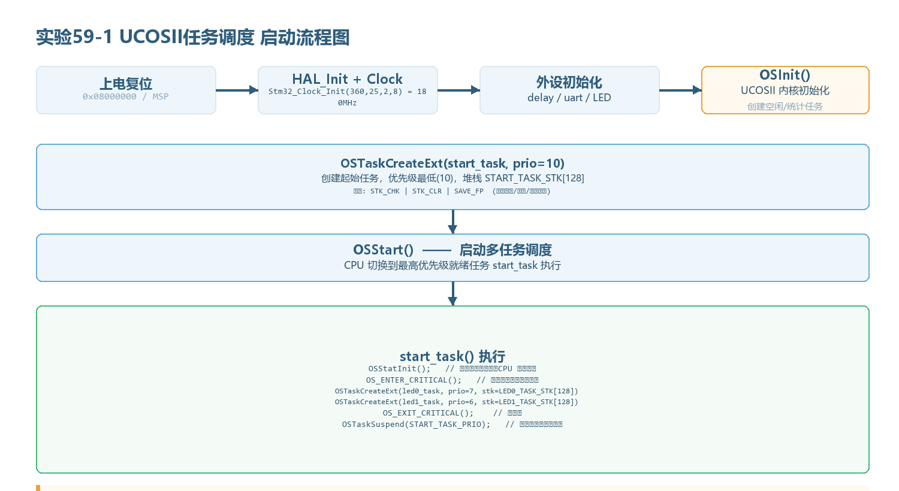
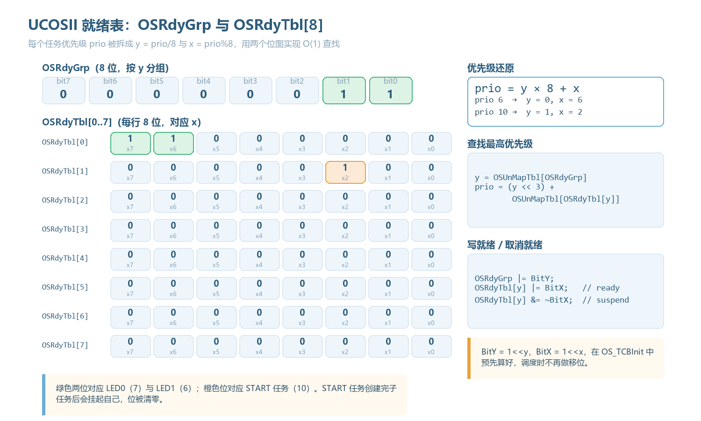
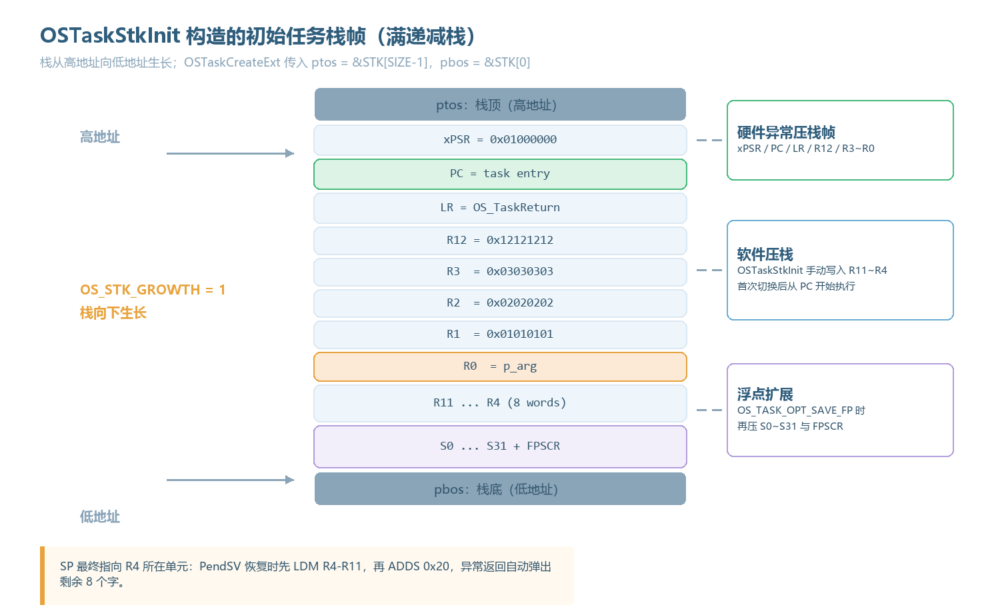
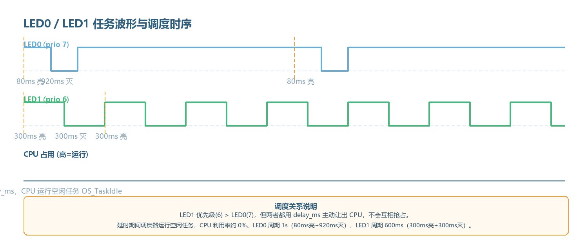

01 实验目标与硬件资源
同一颗 STM32F429 上，让两个 LED 任务按各自周期并行闪烁，理解“任务”而不是“死等”
实验 59-1-1 是 UCOSII 系列的第一个例程：裸机程序只能用 delay_ms() 把 CPU 按住，两个 LED 只能串行闪烁；移植 uC/OS-II 之后，每个 LED 有独立的栈和任务控制块（TCB），内核按优先级抢占，宏观上两个灯各闪各的。
| 任务 | 入口函数 | 优先级 | 栈大小 | 行为 |
|---|---|---|---|---|
| START | start_task | 10 | 128 OS_STK（512 B） | 创建两个 LED 任务后挂起自己 |
| LED0 | led0_task | 7 | 128 OS_STK | 亮 80 ms、灭 920 ms，周期 1 s |
| LED1 | led1_task | 6 | 128 OS_STK | 亮 300 ms、灭 300 ms，周期 600 ms |
| 统计任务 | OS_TaskStat | 62 | OS_TASK_STAT_STK_SIZE | OSStatInit 后统计 CPU 使用率 |
| 空闲任务 | OS_TaskIdle | 63 | OS_TASK_IDLE_STK_SIZE | OSInit 自动创建，永不挂起 |
/* USER/main.c：三个任务的优先级与栈都在编译期确定 */ #define START_TASK_PRIO 10 // 启动任务：只跑一次，最后挂起自己 #define START_STK_SIZE 128 OS_STK START_TASK_STK[START_STK_SIZE]; #define LED0_TASK_PRIO 7 // LED0 优先级低于 LED1，数字越大优先级越低 #define LED0_STK_SIZE 128 OS_STK LED0_TASK_STK[LED0_STK_SIZE]; #define LED1_TASK_PRIO 6 #define LED1_STK_SIZE 128 OS_STK LED1_TASK_STK[LED1_STK_SIZE];
- uC/OS-II 的优先级数值越小越高，0 最高、63 最低；应用任务占用 6、7、10，内核任务占用 62、63。
OS_STK在 Cortex-M4 上是 32 位，所以 128 个单元等于 512 字节，不是 128 字节。- 每个任务必须有独立的栈数组，任务切换时 PSP 指向不同数组，互不覆盖。
OSInit 与 OSStart，启动路径最干净。02 工程结构与源码地图
先认清哪一层在做什么：应用层只碰 API，移植层负责寄存器与汇编，配置层决定裁剪
| 路径 | 作用 | 本页关注点 |
|---|---|---|
| USER/main.c | 应用入口、任务函数 | main、start_task、led0_task、led1_task |
| USER/stm32f4xx_it.c | Cortex-M 异常服务 | SysTick_Handler、HardFault_Handler |
| UCOSII/uCOS-CONFIG/os_cfg.h | 内核裁剪 | 任务数、事件数、节拍率、统计任务开关 |
| UCOSII/uCOS-CONFIG/includes.h | 统一包含头文件 | ucos_ii.h、os_cpu.h、os_cfg.h 的顺序 |
| UCOSII/uCOS-II/Source | 内核 C 源码 | OSInit、OSStart、OS_Sched、OS_TCBInit、OSTimeTick |
| UCOSII/uCOS-II/Ports/ARM-Cortex-M4/Generic/RealView | Cortex-M4 移植层 | os_cpu.h、os_cpu_c.c、os_cpu_a.asm |
| SYSTEM/delay | 延时与 SysTick | delay_init、SysTick_Handler、delay_ms |
| SYSTEM/sys、SYSTEM/usart | 时钟与串口 | Stm32_Clock_Init、uart_init、fputc |
| CORE/startup_stm32f429xx.s | 启动汇编 | 向量表、Reset_Handler、FPU 使能 |
/* UCOSII/uCOS-CONFIG/includes.h：先内核、再移植、最后配置 */
#include <stdio.h>
#include "ucos_ii.h"
#include "os_cpu.h"
#include "os_cfg.h"
#include "app_cfg.h"
- 应用代码只
#include "includes.h"，不直接包含内核私有头，换移植层时不用改 main.c。 os_cfg.h决定哪些 API 被编译进来，例如OS_TASK_STAT_EN为 1 才有统计任务。- 移植层的
os_cpu_a.asm负责 PendSV、OSCtxSw、OS_CPU_SR_Save，C 代码无法替代。
03 启动流程总览
从复位向量到第一个任务运行，中间只有 9 个关键节点

int main(void)
{
HAL_Init(); // HAL 时基：NVIC 分组、SysTick 先按 16 MHz 配 1 ms
Stm32_Clock_Init(360, 25, 2, 8); // PLL: 25 MHz / 25 * 360 / 2 = 180 MHz
delay_init(180); // 用 180 MHz 重装 SysTick，1 tick = 1 ms
uart_init(115200); // USART1 PA9/PA10，printf 重定向
LED_Init(); // PB0/PB1 推挽输出
OSInit(); // 建空闲任务/统计任务、初始化就绪表与 TCB 空闲链
OSTaskCreateExt((void (*)(void *))start_task,
(void *)0,
(OS_STK *)&START_TASK_STK[START_STK_SIZE - 1],
(INT8U)START_TASK_PRIO,
(INT16U)START_TASK_PRIO,
(OS_STK *)&START_TASK_STK[0],
(INT32U)START_STK_SIZE,
(void *)0,
(INT16U)OS_TASK_OPT_STK_CHK | OS_TASK_OPT_STK_CLR);
OSStart(); // 永不返回：选最高优先级任务并跳进去
}
- 复位后先跑启动汇编：初始化 MSP、使能 FPU、调用 SystemInit，再跳
__main完成分散加载，最后进main()。 HAL_Init()里的 SysTick 只是 HAL 的 1 ms 时基，此时OSRunning还是 0，中断里不会调用OSTimeTick()。delay_init(180)重新写SysTick->LOAD，把节拍精确调到OS_TICKS_PER_SEC = 1000。OSInit()先创建优先级 63 的空闲任务和优先级 62 的统计任务，此时就绪表里已经有两位。OSTaskCreateExt()创建 START 任务，优先级 10，立刻成为最高优先级就绪任务。OSStart()调OS_SchedNew()找到 10，置OSTCBHighRdy，再跳OSStartHighRdy。OSStartHighRdy把 PendSV 优先级设为最低，PSP 指向 START 任务栈，异常返回到start_task。start_task创建 LED0、LED1 后调用OSTaskSuspend(START_TASK_PRIO)，让出 CPU。- 此后每次 SysTick 或任务主动让出，都通过 PendSV 完成上下文切换。
OSStart() 之后不会再回到 main。如果 OSStart() 之后还有代码，那些代码永远不会执行——这是初学者最常见的错误之一。04 时钟与 SysTick 时基
OS 的“心跳”不是 magic：180 MHz / 180000 = 1 kHz，一个 tick 正好 1 ms
本工程把 OS_TICKS_PER_SEC 配成 1000。SysTick 是 24 位递减计数器，重装值 = 180000 − 1，递减到 0 产生中断，然后自动重装，所以中断周期 = 180000 / 180 MHz = 1 ms。
void delay_init(u8 SYSCLK)
{
u32 reload;
HAL_SYSTICK_CLKSourceConfig(SYSTICK_CLKSOURCE_HCLK); // SysTick 时钟源 = HCLK = 180 MHz
fac_us = SYSCLK / 8; // 供 delay_us 的循环计数使用
fac_ms = (u16)fac_us * 1000;
reload = SYSCLK * 1000000 / delay_ostickspersec; // 180e6 / 1000 = 180000
SysTick->CTRL |= SYSTICK_CLKSOURCE_HCLK;
SysTick->LOAD = reload - 1; // 24 位重装值，1 ms 一次
SysTick->VAL = 0;
SysTick->CTRL |= 1 << 1; // 开 tick 中断
SysTick->CTRL |= 1 << 0; // 启动计数器
}
void SysTick_Handler(void)
{
HAL_IncTick(); // HAL 自己的毫秒计数，HAL_Delay 依赖它
if (delay_osrunning == 1) { // OSStart 之后才为 1
OSIntEnter(); // OSIntNesting++，告诉内核现在在中断里
OSTimeTick(); // 所有任务 OSTCBDly 减 1，到 0 的置就绪
OSIntExit(); // 退出中断，必要时触发 PendSV 切换
}
}
/* 移植层提供的标准节拍初始化，本工程实际未调用；delay_init 做了等价配置 */ void OS_CPU_SysTickInit(INT32U cnts) { OS_CPU_SysTickClkFreq = OS_CPU_SysTickClkFreqGet(); OS_CPU_SysTickClkFreq /= cnts; // 每秒节拍数 NVIC_SetPriority(SysTick_IRQn, OS_CPU_CFG_SYSTICK_PRIO); OS_CPU_SysTickReloadSet(cnts - 1); OS_CPU_SysTickCounterSet(0); OS_CPU_SysTickIntEnable(); OS_CPU_SysTickEnable(); }
delay_init()必须先于OSStart()，否则 tick 中断按 HAL 的默认 1 ms/16 MHz 配置，节拍不对。delay_osrunning是移植代码里的开关，OSStartHighRdy之后才置 1，避免 OS 未启动就调用内核 API。- SysTick 中断优先级由 HAL 配成 15（最低），与 PendSV 同级；这样内核临界区用 PRIMASK 一关，两个都不会来。
OSTimeTick()只做减计数和置就绪，不直接切换；真正切换在OSIntExit()里触发 PendSV。
| 函数 | 作用 | 参数 | 返回值 | 为什么这样写 |
|---|---|---|---|---|
| delay_init | 配置 SysTick 为 1 ms 节拍 | SYSCLK = 180（MHz） | 无 | 用实际主频算重装值，换晶振只需改实参 |
| SysTick_Handler | 节拍中断入口 | 无 | 无 | 先 OSIntEnter 再 OSTimeTick，最后 OSIntExit 保证中断嵌套计数正确 |
| OS_CPU_SysTickInit | 移植层标准节拍初始化 | cnts：每 tick 的时钟数 | 无 | 与 delay_init 等价，保留给不使用 ALIENTEK delay 的工程 |
05 启动汇编与 C 运行时
在 main 之前，栈指针、FPU、.data 拷贝和 .bss 清零已经完成
__Vectors DCD __initial_sp ; 0x0000: 初始 MSP = 栈顶 DCD Reset_Handler ; 0x0004: 复位入口 DCD NMI_Handler DCD HardFault_Handler ... DCD PendSV_Handler ; 移植层的上下文切换入口 DCD SysTick_Handler ; delay.c 里的节拍中断 Reset_Handler PROC EXPORT Reset_Handler [WEAK] IMPORT SystemInit IMPORT __main LDR R0, =SystemInit BLX R0 ; 关中断、清流水线等基础设置 LDR R0, =__main BX R0 ; C 库：分散加载 + 调 main ENDP
- 向量表第 0 项是初始 MSP，硬件复位时自动装进 SP；第 1 项是 Reset_Handler，自动装进 PC。
- 启动文件里还有一段汇编使能 FPU（CPACR 的 CP10/CP11 置 1），否则第一次执行浮点指令就进 HardFault。
__main是 ARM 编译器运行库入口，它完成 RW 数据从 Flash 到 RAM 的拷贝、ZI 段清零，然后才调用用户的main()。- PendSV 和 SysTick 的向量必须指向移植层与 delay.c 的实现，名字写错就会落到默认死循环。
SP 和 PC 最直接。06 main 初始化与外设
HAL → 时钟 → 延时 → 串口 → LED，顺序不能乱：时钟没起来，串口波特率就是错的
HAL_Init(); // 1) HAL 基础：NVIC 分组、SysTick、HAL_MspInit Stm32_Clock_Init(360, 25, 2, 8); // 2) PLL：HSE 25 MHz → SYSCLK 180 MHz delay_init(180); // 3) SysTick 1 ms，必须在时钟稳定之后 uart_init(115200); // 4) USART1，PA9 复用推挽、PA10 上拉输入 LED_Init(); // 5) PB0/PB1 推挽输出，默认高电平灭灯 /* SYSTEM/sys/sys.c： PLL 参数全部由实参传入，方便换板 */ RCC_OscInitStruct.PLL.PLLM = pllm; // 25：HSE 先分频到 1 MHz RCC_OscInitStruct.PLL.PLLN = plln; // 360：VCO = 1 MHz × 360 = 360 MHz RCC_OscInitStruct.PLL.PLLP = pllp; // 2：SYSCLK = 360 / 2 = 180 MHz RCC_OscInitStruct.PLL.PLLQ = pllq; // 8：USB/SDIO = 45 MHz RCC_ClkInitStruct.AHBCLKDivider = RCC_SYSCLK_DIV1; // HCLK 180 MHz RCC_ClkInitStruct.APB1CLKDivider = RCC_HCLK_DIV4; // APB1 45 MHz RCC_ClkInitStruct.APB2CLKDivider = RCC_HCLK_DIV2; // APB2 90 MHz HAL_RCC_ClockConfig(&RCC_ClkInitStruct, FLASH_LATENCY_5); // 180 MHz 需 5 个等待周期
/* SYSTEM/usart/usart.c：115200-8-N-1，并重定向 printf */ huart1.Instance = USART1; huart1.Init.BaudRate = bound; huart1.Init.WordLength = UART_WORDLENGTH_8B; huart1.Init.StopBits = UART_STOPBITS_1; huart1.Init.Parity = UART_PARITY_NONE; huart1.Init.Mode = UART_MODE_TX_RX; HAL_UART_Init(&huart1); int fputc(int ch, FILE *f) // printf 最终走到这里 { while ((USART1->SR & 0X40) == 0); // 等 TXE 置位 USART1->DR = (u8)ch; return ch; }
- HAL_Init 内部把 NVIC 优先级分组设为 4 位抢占、0 位子优先级，后面所有外设中断都按这个分组解释。
- 时钟树必须先于串口初始化：
uart_init用HAL_RCC_GetPCLK2Freq()计算 BRR，PCLK2 不对，115200 就会变成别的值。 - LED 默认输出高电平，因为硬件是低电平点亮；
LED0=1是灭，LED0=0才是亮。 fputc用轮询等 TXE，不占中断；在任务里 printf 会阻塞当前任务，但不会影响更高优先级任务抢占。
07 任务控制块与就绪表
内核不认识“函数”，它只认识 TCB；就绪表则是所有 TCB 的优先级索引

/* ucos_ii.h：TCB 中与调度直接相关的字段 */ typedef struct os_tcb { OS_STK *OSTCBStkPtr; // 当前栈顶，PendSV 保存/恢复的就是它 OS_STK *OSTCBStkBottom; // 栈底，用于栈使用率检查 INT32U OSTCBStkSize; // 栈容量（OS_STK 个数） INT16U OSTCBOpt; // STK_CHK / STK_CLR / SAVE_FP INT8U OSTCBStat; // 任务状态：READY/RUNNING/SUSPEND/PEND INT8U OSTCBStatPend; // 等待结果：TIMEOUT / PEND_OK / PEND_ABORT INT16U OSTCBDly; // 延时剩余 tick，0 表示不在延时 INT8U OSTCBPrio; // 优先级 0~63 INT8U OSTCBX, OSTCBY; // 预先算好的 x = prio%8, y = prio/8 INT8U OSTCBBitX, OSTCBBitY;// 1<<x、1<<y，避免调度时再移位 OS_EVENT *OSTCBEventPtr; // 正在等待的事件控制块 INT8U OSTCBDelReq; // 删除请求标志 } OS_TCB;
/* os_core.c OS_TCBInit()：把新任务挂进就绪表 */ ptcb->OSTCBX = (INT8U)(prio & 0x07u); ptcb->OSTCBY = (INT8U)((prio >> 3u) & 0x07u); ptcb->OSTCBBitX = (OS_STK)(1uL << ptcb->OSTCBX); ptcb->OSTCBBitY = (OS_STK)(1uL << ptcb->OSTCBY); ptcb->OSTCBPrio = prio; ptcb->OSTCBDly = 0u; ptcb->OSTCBStat = OS_STAT_RDY; ptcb->OSTCBStatPend = OS_STAT_PEND_OK; ptcb->OSTCBDelReq = OS_ERR_NONE; OSRdyGrp |= ptcb->OSTCBBitY; // 组位图：标记第 y 组有人就绪 OSRdyTbl[ptcb->OSTCBY] |= ptcb->OSTCBBitX;// 行位图：标记组内第 x 位就绪 OSTCBPrioTbl[prio] = ptcb; // 优先级到 TCB 的反向索引
- 优先级同时承担“身份”和“调度键”：
OSTCBPrioTbl[prio]直接拿到 TCB，不需要遍历链表。 - 就绪表是 8×8 位图，
OSRdyGrp的每一位对应OSRdyTbl的一行，查找最高优先级只需两次查表。 OSTCBX/Y/BitX/BitY在任务创建时算好，切换路径里只做按位或/与，减少中断延迟。OSTCBDly为 0 是任务能被调度的必要条件；非 0 表示还在延时，即使就绪位为 1 也不会被选中。
08 调度与 PendSV 上下文切换
OS_Sched 只做“选谁”，真正换栈发生在 PendSV 异常里
void OS_Sched(void)
{
INT8U y;
OS_ENTER_CRITICAL(); // 选任务期间不允许被中断打断
if ((OSIntNesting == 0u) && (OSLockNesting == 0u)) { // 中断里/调度锁内不切换
y = OSUnMapTbl[OSRdyGrp]; // 找到最高的非空组
OSPrioHighRdy = (INT8U)((y << 3u) + OSUnMapTbl[OSRdyTbl[y]]);
if (OSPrioHighRdy != OSPrioCur) {// 只有更高优先级才切
OSTCBHighRdy = OSTCBPrioTbl[OSPrioHighRdy];
OSCtxSwCtr++; // 统计切换次数
OS_TASK_SW(); // 宏：触发 PendSV
}
}
OS_EXIT_CRITICAL();
}
PendSV_Handler
CPSID I ; 切换期间关中断
MRS R0, PSP ; 取当前任务的进程栈指针
CBZ R0, PendSV_nosave ; 第一次切换，没有旧上下文可存
SUBS R0, R0, #0x20
STM R0, {R4-R11} ; 手工保存 callee-saved 寄存器
LDR R1, =OSTCBCur
LDR R1, [R1]
STR R0, [R1] ; OSTCBCur->OSTCBStkPtr = SP
PendSV_nosave
PUSH {R14}
LDR R0, =OSTaskSwHook
BLX R0 ; 用户钩子，可为空
POP {R14}
LDR R0, =OSPrioCur ; OSPrioCur = OSPrioHighRdy
LDR R1, =OSPrioHighRdy
LDRB R2, [R1]
STRB R2, [R0]
LDR R0, =OSTCBCur ; OSTCBCur = OSTCBHighRdy
LDR R1, =OSTCBHighRdy
LDR R2, [R1]
STR R2, [R0]
LDR R0, [R2] ; R0 = 新任务栈顶
LDM R0, {R4-R11} ; 恢复新任务的 R4-R11
ADDS R0, R0, #0x20
MSR PSP, R0 ; PSP 指向新任务栈
ORR LR, LR, #0xF4 ; 异常返回使用 PSP，并恢复 FPU 状态
CPSIE I
BX LR
OS_Sched不会在中断服务程序里切换（OSIntNesting != 0），中断退出由OSIntExit负责。OSLockNesting让任务可以暂时禁止调度，临界区里改链表常用。- R4-R11 是 AAPCS 的 callee-saved 寄存器，必须由 PendSV 手工保存；R0-R3、R12、LR、PC、xPSR 由硬件自动压栈。
- PendSV 优先级设为最低，保证它在所有中断处理完之后才执行，不会打断高优先级 ISR。
ORR LR, LR, #0xF4让异常返回后使用 PSP 而不是 MSP，否则会回到中断栈。
09 临界区与中断嵌套
uC/OS-II 的临界区不是简单关中断，而是“保存 PRIMASK → 关 → 恢复”，因此可以嵌套
/* os_cpu.h：OS_CRITICAL_METHOD = 3，用局部变量保存 PRIMASK */ #define OS_CRITICAL_METHOD 3u #define OS_ENTER_CRITICAL() { cpu_sr = OS_CPU_SR_Save(); } #define OS_EXIT_CRITICAL() { OS_CPU_SR_Restore(cpu_sr); } /* os_cpu_a.asm：保存与恢复 PRIMASK */ OS_CPU_SR_Save MRS R0, PRIMASK ; 读当前中断屏蔽状态 CPSID I ; 关所有可屏蔽中断 BX LR OS_CPU_SR_Restore MSR PRIMASK, R0 ; 还原进入临界区前的状态 BX LR
/* 典型用法：改就绪表必须成对出现 */ OS_ENTER_CRITICAL(); OSRdyTbl[y] &= ~bitX; // 清就绪位 if (OSRdyTbl[y] == 0u) { OSRdyGrp &= ~bitY; // 整行空了才清组位 } OS_EXIT_CRITICAL();
- 方法 3 的
cpu_sr是函数内局部变量，每个临界区各存各的，所以可以嵌套调用。 PRIMASK只屏蔽可配置优先级中断，NMI 和 HardFault 仍然响应；这符合“内核数据结构不能被普通中断改坏”的需求。- 临界区要短：只包住位图/链表操作，不要在里面
printf或延时，否则中断延迟直线上升。 OSIntEnter()让OSIntNesting++，OSIntExit()减到 0 时才允许调度，保证中断嵌套安全。
OSTimeDly），任务永远不会被切走，系统表现为“死机”。这类 API 只能在临界区外调用。10 任务创建 OSTaskCreateExt
创建任务 = 占优先级 + 清栈 + 造初始帧 + 挂就绪表 + 可能立即调度
INT8U OSTaskCreateExt(void (*task)(void *p_arg), void *p_arg, OS_STK *ptos,
INT8U prio, INT16U id, OS_STK *pbos, INT32U stk_size,
void *pext, INT16U opt)
{
OS_STK *psp;
INT8U err;
OS_ENTER_CRITICAL();
if (OSIntNesting > 0u) { // 不允许在 ISR 里创建任务
OS_EXIT_CRITICAL();
return OS_ERR_TASK_CREATE_ISR;
}
if (OSTCBPrioTbl[prio] == (OS_TCB *)0) { // 优先级未被占用
OSTCBPrioTbl[prio] = OS_TCB_RESERVED; // 先占坑，防止并发创建
OS_EXIT_CRITICAL();
OS_TaskStkClr(pbos, stk_size, opt); // 按需把整段栈清 0
psp = OSTaskStkInit(task, p_arg, ptos, opt); // 伪造异常压栈帧
err = OS_TCBInit(prio, psp, pbos, id, stk_size, pext, opt);
if (err == OS_ERR_NONE) {
if (OSRunning == OS_TRUE) { // 内核已启动则立即比较优先级
OS_Sched();
}
} else {
OSTCBPrioTbl[prio] = (OS_TCB *)0; // 失败回滚占位
}
return err;
}
OS_EXIT_CRITICAL();
return OS_ERR_PRIO_EXIST; // 同一优先级只能有一个任务
}
OS_STK *OSTaskStkInit(void (*task)(void *p_arg), void *p_arg, OS_STK *ptos, INT16U opt)
{
OS_STK *p_stk;
p_stk = ptos + 1u; // 指向栈顶之外
p_stk = (OS_STK *)((OS_STK)p_stk & 0xFFFFFFF8u); // 8 字节对齐（AAPCS）
*(--p_stk) = (OS_STK)0x01000000uL; // xPSR：Thumb 位必须为 1
*(--p_stk) = (OS_STK)task; // PC：异常返回后从这里执行
*(--p_stk) = (OS_STK)OS_TaskReturn; // LR：任务 return 时的兜底
*(--p_stk) = (OS_STK)0x12121212uL; // R12
*(--p_stk) = (OS_STK)0x03030303uL; // R3
*(--p_stk) = (OS_STK)0x02020202uL; // R2
*(--p_stk) = (OS_STK)0x01010101uL; // R1
*(--p_stk) = (OS_STK)p_arg; // R0：任务参数
*(--p_stk) = (OS_STK)0x11111111uL; // R11 ~ R4
...
return p_stk; // 返回新的栈顶，存入 TCB
}

ptos必须传&STK[SIZE-1]，pbos传&STK[0]；传反了会在第一次切换时踩坏内存。- 初始帧故意伪造得像“刚被异常打断”：PendSV 只要按同一套偏移恢复，就能让新任务从入口函数开始跑。
xPSR = 0x01000000的 bit24 是 Thumb 状态位，Cortex-M 只能执行 Thumb 指令，该位必须为 1。OS_TaskStkClr只在OS_TASK_STAT_STK_CHK_EN且 opt 带 STK_CLR 时执行，用来做栈使用率统计。- 如果
OSRunning == OS_TRUE，创建完立即OS_Sched()，新任务可能马上抢占当前任务。
| 参数 | 含义 | 本工程取值 |
|---|---|---|
| task | 任务入口，签名必须是 void (*)(void *) | start_task / led0_task / led1_task |
| p_arg | 传给任务的参数，存到初始 R0 | 0 |
| ptos | 栈顶地址（满递减栈的最高地址） | &STK[SIZE-1] |
| prio | 优先级 0~63，必须唯一 | 10 / 7 / 6 |
| id | 用户扩展 ID，内核不使用 | 与 prio 相同 |
| pbos | 栈底地址，用于清栈和统计 | &STK[0] |
| stk_size | 栈容量（OS_STK 个数） | 128 |
| pext | 扩展 TCB 指针 | 0 |
| opt | STK_CHK / STK_CLR / SAVE_FP | STK_CHK | STK_CLR |
11 延时、节拍与统计任务
delay_ms 在 UCOS 工程里已经变成“主动让出 CPU”，不是死循环
void OSTimeDly(INT32U ticks)
{
if (OSIntNesting > 0u) return; // 中断里不能延时
if (ticks > 0u) {
OS_ENTER_CRITICAL();
if ((OSRdyTbl[OSTCBCur->OSTCBY] &= ~OSTCBCur->OSTCBBitX) == 0u) {
OSRdyGrp &= ~OSTCBCur->OSTCBBitY; // 当前任务从就绪表摘掉
}
OSTCBCur->OSTCBDly = ticks; // 记录还要睡几个 tick
OS_EXIT_CRITICAL();
OS_Sched(); // 立刻切到别的任务
}
}
/* os_core.c OSTimeTick()：每个 tick 调一次 */ ptcb = OSTCBList; while (ptcb->OSTCBPrio != OS_TASK_IDLE_PRIO) { // 遍历所有 TCB OS_ENTER_CRITICAL(); if (ptcb->OSTCBDly != 0u) { if (--ptcb->OSTCBDly == 0u) { // 睡够了 if ((ptcb->OSTCBStat & OS_STAT_SUSPEND) == 0u) { OSRdyGrp |= ptcb->OSTCBBitY; // 重新置就绪 OSRdyTbl[ptcb->OSTCBY] |= ptcb->OSTCBBitX; } } } ptcb = ptcb->OSTCBNext; OS_EXIT_CRITICAL(); }
/* SYSTEM/delay/delay.c：delay_ms 被改成 OS 感知版本 */ void delay_ms(u32 nms) { if (delay_osrunning == 1) { // OS 已启动 delay_ostimedly(nms / fac_ms); // 转成 OSTimeDly，让出 CPU } else { delay_xms(nms); // OS 未启动时仍是忙等 } }
OSTimeDly先摘就绪位、再记OSTCBDly、最后OS_Sched，三步都在临界区保护下完成。- 被挂起的任务即使
OSTCBDly减到 0，只要OS_STAT_SUSPEND还在，也不会被置就绪。 OSTimeTick遍历 TCB 链表，空闲任务作为链表尾哨兵，不处理它的延时。delay_ms(80)在 OS 启动后等价于OSTimeDly(80)，所以 LED0 的 80 ms 是“睡眠 80 个 tick”。OSStatInit在第一个 tick 里测最大空闲计数，之后统计任务用OSIdleCtr估算 CPU 使用率。
delay_ms 依赖 delay_osrunning 判断，若在 OSStart 前调用仍是忙等；因此 main 里初始化外设时用它没问题，任务里调用才会让出 CPU。12 启动任务与任务挂起
START 任务只做三件事：建两个任务、打印一句、把自己挂起
void start_task(void *p_arg)
{
OS_CPU_SR cpu_sr = 0;
(void)p_arg;
OS_ENTER_CRITICAL(); // 创建任务期间禁止调度，保证三个任务一次性建完
OSTaskCreateExt((void (*)(void *))led0_task,
(void *)0,
(OS_STK *)&LED0_TASK_STK[LED0_STK_SIZE - 1],
(INT8U)LED0_TASK_PRIO,
(INT16U)LED0_TASK_PRIO,
(OS_STK *)&LED0_TASK_STK[0],
(INT32U)LED0_STK_SIZE,
(void *)0,
(INT16U)OS_TASK_OPT_STK_CHK | OS_TASK_OPT_STK_CLR);
OSTaskCreateExt((void (*)(void *))led1_task,
(void *)0,
(OS_STK *)&LED1_TASK_STK[LED1_STK_SIZE - 1],
(INT8U)LED1_TASK_PRIO,
(INT16U)LED1_TASK_PRIO,
(OS_STK *)&LED1_TASK_STK[0],
(INT32U)LED1_STK_SIZE,
(void *)0,
(INT16U)OS_TASK_OPT_STK_CHK | OS_TASK_OPT_STK_CLR);
OS_EXIT_CRITICAL(); // 放开调度，LED1 会立刻抢占
printf("任务创建完成，START 任务即将挂起\r\n");
OSTaskSuspend(START_TASK_PRIO); // 挂起自己，不再参与调度
}
- 创建任务放在临界区里，避免建到一半被更高优先级任务抢占，看到“半个任务”。
- 三个任务的栈都是静态数组，链接器分配在 RAM；不调用
malloc，运行期没有堆碎片。 OSTaskSuspend(START_TASK_PRIO)后 START 任务的就绪位被清、状态字加 SUSPEND，永远不会再运行。- 挂起自己后 CPU 立刻切到优先级 6 的 LED1，再切到 7 的 LED0，空闲任务只在两者都睡时才跑。
OS_TaskReturn，最终删除该任务并报错——不同版本行为略有差异，显式挂起最稳妥。13 实验现象与调试验证
两个灯不再互相等待：LED1 闪两次，LED0 才闪一次

| 观察点 | 预期现象 | 验证方法 |
|---|---|---|
| LED1（PB1） | 亮 300 ms、灭 300 ms，1 秒内闪约 1.67 次 | 示波器接 PB1，测高/低脉宽 |
| LED0（PB0） | 亮 80 ms、灭 920 ms，周期 1 s | 示波器接 PB0，确认短脉冲周期 1 s |
| 串口 | 只打印一次“任务创建完成” | USART1 115200，复位后观察 |
| CPU 使用率 | 统计任务给出 CPU Usage | 调试器看 OSCPUUsage |
| 切换次数 | OSCtxSwCtr 持续增长 | Watch 窗口观察 |
- 如果两个灯“同步闪”或只有一个闪，先检查优先级是否重复：
OSTaskCreateExt会返回OS_ERR_PRIO_EXIST。 - 如果 LED 完全不动，看 SysTick 是否真的 1 ms：
SysTick->LOAD应为 179999。 - 如果串口只输出乱码，检查 PCLK2 是否为 90 MHz，以及
uart_init是否在时钟配置之后。 - 用调试器暂停时，看
OSTCBCur->OSTCBPrio可以确认当前运行的是哪个任务。
14 总结与移植要点
移植 uC/OS-II 到一颗新 Cortex-M4，只需要改三处：节拍、PendSV、临界区
/* os_cfg.h 里与本实验直接相关的裁剪项 */ #define OS_MAX_TASKS 10u // 应用任务上限（不含空闲/统计） #define OS_LOWEST_PRIO 63u // 64 个优先级，位图正好 8x8 #define OS_TICKS_PER_SEC 1000u // 1 ms 一个节拍 #define OS_TASK_STAT_EN 1u // 使能统计任务（优先级 62） #define OS_TASK_CREATE_EXT_EN 1u // 使能 OSTaskCreateExt #define OS_TASK_DEL_EN 1u // 使能 OSTaskDel / OSTaskDelReq #define OS_TASK_SUSPEND_EN 1u // 使能 OSTaskSuspend / OSTaskResume #define OS_SEM_EN 1u // 后续实验要用信号量 #define OS_MBOX_EN 1u // 后续实验要用邮箱
- 启动顺序固定：HAL_Init → 时钟 → delay_init → 外设 → OSInit → 建任务 → OSStart。
OSStart()不返回；它通过OSStartHighRdy直接把 PSP 指向最高优先级任务的栈并异常返回。- 调度只看就绪表和优先级，延时/等待的任务不在就绪表里，所以不会浪费 CPU。
- 移植三要素：SysTick 提供节拍、PendSV 保存/恢复 R4-R11、PRIMASK 实现可嵌套临界区。
- 任务栈要按最坏调用深度估算；本实验 128 个 OS_STK 对 LED 任务足够，但加 printf 或浮点运算要加大。
OSTaskSuspend、OSTaskResume、OSTaskDelReq 动态控制任务的生与死。15 交互演示
os_core.c 的调度分支，仅演示逻辑